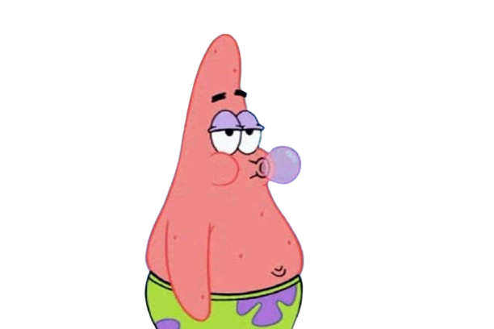

 Recepção do público
A recepção crítica para o personagem de profissionais e fãs tem sido positiva. Em sua resenha em DVD do DVD Verdict, Bill Treadway chamou Patrick de "o idiota da cidade, que às vezes dá alguns conselhos realmente ruins a Bob Esponja, mas ele é um amigo leal e isso é algo que não vemos muito hoje em dia". Ele disse: "Patrick é a definição de estúpido e suas travessuras farão você rir em voz alta".
Em uma crítica publicada em 2007, Peter Keepnews do The New York Times disse: "Patrick é um personagem popular, e os novos episódios ilustram o motivo: ele é infalivelmente entusiasmado, comovente leal e absolutamente indiferente às suas limitações intelectuais. Hilariamente dublado por Bill Fagerbakke, ele não é apenas uma criação cômica cativante, mas um modelo para idiotas em todos os lugares."